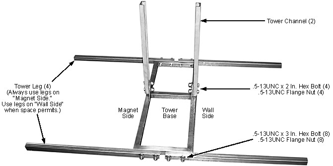

Use all four legs when space permits. (See the following two illustrations.)
If the passage into the Magnet Room is narrow, attach the legs as far from the magnet inside the room as practical.
Illustration 14: Tower Base
